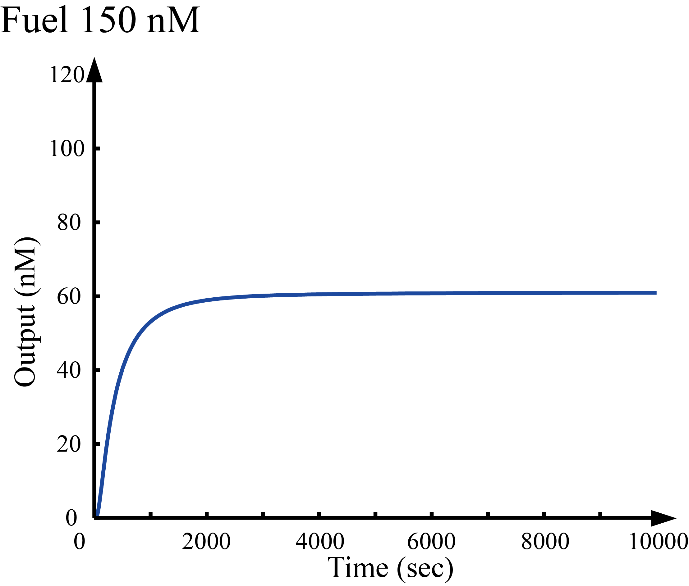
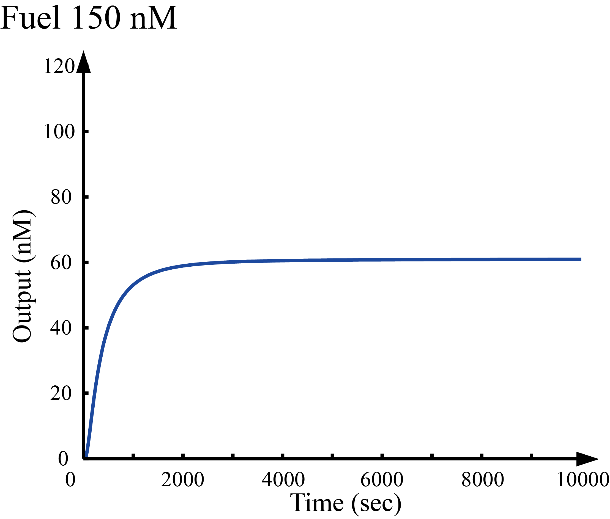
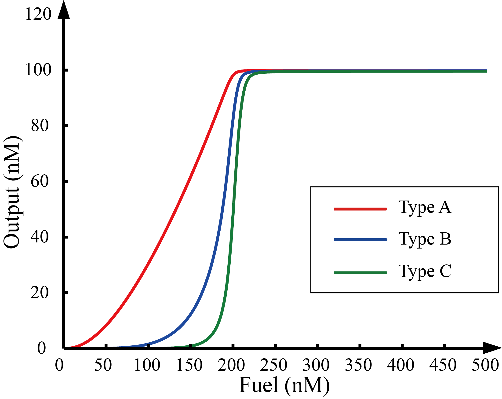
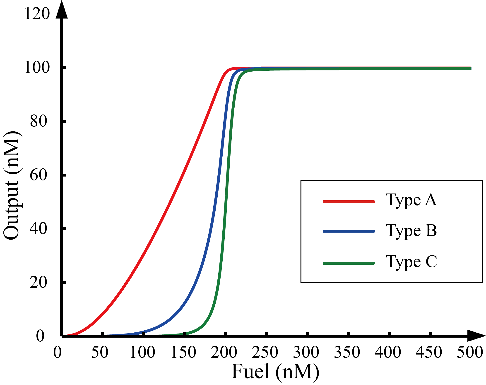

-
Wet Experiment
Experiment1 Groundの設計
Experiment2 ミスマッチ塩基対を含む鎖置換反応 -
Dry Experiment
私たちはTractorの進み具合がFuelの濃度に依存することを確認するためにMatlab[1]を用いてシミュレーションを行った。TractorとGroundの初期濃度は100(nM)とし、Fuelの初期濃度を50,100,150,200(nM)としてOutputの時間濃度変化をシミュレーションした。さらに、時刻を10000(sec)に固定しFuelの初期濃度を0から500nMにまで変化させた際のOutputの濃度変化のシミュレーションを行った。 図１から４より、Outputの濃度変化がFuelの初期濃度に依存していることが確認でき、図５よりFuelの初期濃度が一定の値を越えると急激にOutputの濃度が上昇していることが読み取れる。また、Spotの段数を１段、２段、３段と増やすにつれて、閾値を超えた際のOutputの濃度上昇が急激になっていることがわかる。
We simulated with Matlab[1] to confirm that the process of Walker depends on the initial concentration of Fuel. We simulated the time concentration change of Output after setting the initial concentration of Walker and Ground in 100 nM, and Fuel in 50,100,150,200 nM. Also, we simulated the time concentration change of Output when changing the initial concentration of Fuel from 0 to 500 nM with fixing time as 10000 seconds. From figure 1 to 4 we find that the time concentration change of Output depends on the initial concentration of Fuel, and figure 5 says that the concentration of Output increased rapidly when the initial concentration of Fuel is given more than specific value. Additionally, concentration of Output has increased rapidly above threshold as increase levels of Spot one by one (Version A,B, and C).

 

 

-
Reference
[1]Matlab: http://jp.mathworks.com/products/matlab/